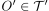
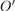
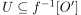

Preimages of neighbourhoods under continuous maps
1. Satz
Seien  und
und  topologische Räume und
topologische Räume und  eine Abbildung.
Dann sind folgende Aussagen äquivalent:
eine Abbildung.
Dann sind folgende Aussagen äquivalent:
 ist
ist 2. Beweis
2.1. a)
2.2. b)
Sei , so ist  Umgebung aller Punkte (vgl. Offenheit und Umgebung aller Punkte). Nach Annahme folgt damit, dass Umgebung für beliebige  ist. Daraus folgt wieder wegen der Äquivalenz von Offenheit und Umgebung aller Punkte, dass offen ist.